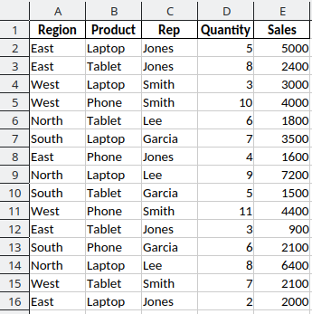

18 18. Pivot Tables
Follow along with one (or both if you like) of the tutorials below. The first one is a video. The 2nd one is a webpage that is written out.
18.1 Pivot table tutorial (video tutorial)
See this video for an overview of Excel pivot tables: https://www.youtube.com/watch?v=PdJzy956wo4
Click here to get the practice file: PivotTables-KevinCookies.xlsx
18.2 Pivot table tutorial (webpage to read)
See this writeup for an overview of Excel pivot tables: https://exceljet.net/articles/excel-pivot-tables
Click here to get the practice file: sample data for pivot table.xlsx
18.3 Additional material
I thought the following pages also give good explanations and covereage. However, if you read/watched the material above that is enough for our class.
https://www.computergaga.com/blog/learn-pivot-tables-excel-pivot-tables-tutorial/
18.4 groupby and pivotby functions
Modern excel has added the functions, groupby and pivotby that allow you to create much of what pivot tables are used for directly in a regular worksheet. See below for more info.
The GROUPBY function in Excel summarizes data by grouping rows and applying an aggregation function such as SUM, AVERAGE, or COUNT.
The PIVOTBY function is similar, but it summarizes data across both rows and columns. It creates a formula-based summary that looks like a PivotTable, but it is written directly as a worksheet formula.
Because GROUPBY and PIVOTBY are dynamic array formulas, you enter the formula in one cell only. Excel then spills the results into the nearby cells automatically.
18.5 Sample Excel Data
The table below represents a small Excel worksheet. The letters across the top are Excel column headers, and the numbers down the side are Excel row headers.
| A | B | C | D | E | |
|---|---|---|---|---|---|
| 1 | Product | Sales | Rep | Quantity | Region |
| 2 | Laptop | 1200 | Jones | 3 | East |
| 3 | Monitor | 450 | Smith | 2 | West |
| 4 | Laptop | 1500 | Jones | 4 | East |
| 5 | Keyboard | 150 | Lee | 5 | South |
| 6 | Monitor | 600 | Smith | 3 | West |
| 7 | Laptop | 900 | Lee | 2 | South |
| 8 | Keyboard | 200 | Jones | 6 | East |
18.6 GROUPBY Syntax
GROUPBY(row_fields, values, function)Arguments
- row_fields – column used to group rows
- values – values to aggregate
- function – aggregation function
18.7 Example 1 – Total Sales by Region
Enter this formula in cell G1:
=GROUPBY(E2:E8, B2:B8, SUM)The formula is typed only in G1. The results spill into G1:H4.
| G | H | |
|---|---|---|
| 1 | Region | Total Sales |
| 2 | East | 2900 |
| 3 | South | 1050 |
| 4 | West | 1050 |
This formula groups the data by Region and adds the Sales values for each region.
18.8 Example 2 – Average Quantity by Product
Enter this formula in cell G1:
=GROUPBY(A2:A8, D2:D8, AVERAGE)The formula is typed only in G1. The results spill into G1:H4.
| G | H | |
|---|---|---|
| 1 | Product | Average Quantity |
| 2 | Keyboard | 5.5 |
| 3 | Laptop | 3 |
| 4 | Monitor | 2.5 |
This formula groups the data by Product and calculates the average Quantity for each product.
18.9 PIVOTBY Syntax
PIVOTBY(row_fields, col_fields, values, function)Arguments
- row_fields – field used for the rows of the summary
- col_fields – field used for the columns of the summary
- values – values to aggregate
- function – aggregation function
18.10 Example 3 – Total Sales by Region and Product
Enter this formula in cell G1:
=PIVOTBY(E2:E8, A2:A8, B2:B8, SUM)The formula is typed only in G1. The results spill into G1:J4.
| G | H | I | J | |
|---|---|---|---|---|
| 1 | Region | Keyboard | Laptop | Monitor |
| 2 | East | 200 | 2700 | 0 |
| 3 | South | 150 | 900 | 0 |
| 4 | West | 0 | 0 | 1050 |
This formula places Region down the rows, Product across the columns, and calculates total Sales for each combination.
18.11 Example 4 – Total Quantity by Rep and Region
Enter this formula in cell G1:
=PIVOTBY(C2:C8, E2:E8, D2:D8, SUM)The formula is typed only in G1. The results spill into G1:J4.
| G | H | I | J | |
|---|---|---|---|---|
| 1 | Rep | East | South | West |
| 2 | Jones | 13 | 0 | 0 |
| 3 | Lee | 0 | 7 | 0 |
| 4 | Smith | 0 | 0 | 5 |
This formula places Rep down the rows, Region across the columns, and calculates total Quantity.
18.12 GROUPBY vs. PIVOTBY
Use GROUPBY when you want a one-direction summary, such as:
Total Sales by RegionUse PIVOTBY when you want a two-direction summary, such as:
Total Sales by Region and Product| A | B | C | |
|---|---|---|---|
| 1 | Tool | Layout | Best Use |
| 2 | GROUPBY | One list of grouped results | Summaries by one field |
| 3 | PIVOTBY | Rows and columns | Cross-tab summaries |
| 4 | PivotTable | Interactive report | Drag-and-drop analysis |
18.13 Formula Functions vs. PivotTables
GROUPBY and PIVOTBY are worksheet formulas. They update like formulas and can be combined with other Excel functions.
PivotTables are interactive Excel objects. They are better when users want to drag fields, filter data visually, expand or collapse groups, or build reports without writing formulas.
| A | B | C | |
|---|---|---|---|
| 1 | Feature | GROUPBY / PIVOTBY | PivotTable |
| 2 | Created with a formula | Yes | No |
| 3 | Updates with worksheet recalculation | Yes | Usually requires refresh |
| 4 | Easy to copy into formulas | Yes | Less direct |
| 5 | Drag-and-drop interface | No | Yes |
| 6 | Best for formula models | Yes | Sometimes |
| 7 | Best for interactive exploration | Sometimes | Yes |
Refer to the following spreadsheet:

19 Practice Exercises
Use the sample worksheet above to answer the following questions. The answer are below.
Question 1
Find the total Sales for each Region.
Your answer should produce a result like this:
| G | H | |
|---|---|---|
| 1 | Region | Total Sales |
| 2 | East | 2900 |
| 3 | South | 1050 |
| 4 | West | 1050 |
Question 2
Find the average Quantity for each Product.
Your answer should produce a result like this:
| G | H | |
|---|---|---|
| 1 | Product | Average Quantity |
| 2 | Keyboard | 5.5 |
| 3 | Laptop | 3 |
| 4 | Monitor | 2.5 |
Question 3
Use PIVOTBY to find the total Sales for each Region and Product.
Your answer should produce a result like this:
| G | H | I | J | |
|---|---|---|---|---|
| 1 | Region | Keyboard | Laptop | Monitor |
| 2 | East | 200 | 2700 | 0 |
| 3 | South | 150 | 900 | 0 |
| 4 | West | 0 | 0 | 1050 |
Question 4
Use PIVOTBY to find the total Quantity for each Rep and Region.
Your answer should produce a result like this:
| G | H | I | J | |
|---|---|---|---|---|
| 1 | Rep | East | South | West |
| 2 | Jones | 13 | 0 | 0 |
| 3 | Lee | 0 | 7 | 0 |
| 4 | Smith | 0 | 0 | 5 |
Question 5
In your own words, explain when you would use PIVOTBY instead of a regular PivotTable.
Q1
Enter this formula in cell G1:
=GROUPBY(E2:E8, B2:B8, SUM)The formula spills into G1:H4.
| G | H | |
|---|---|---|
| 1 | Region | Total Sales |
| 2 | East | 2900 |
| 3 | South | 1050 |
| 4 | West | 1050 |
Q2
Enter this formula in cell G1:
=GROUPBY(A2:A8, D2:D8, AVERAGE)The formula spills into G1:H4.
| G | H | |
|---|---|---|
| 1 | Product | Average Quantity |
| 2 | Keyboard | 5.5 |
| 3 | Laptop | 3 |
| 4 | Monitor | 2.5 |
Q3
Enter this formula in cell G1:
=PIVOTBY(E2:E8, A2:A8, B2:B8, SUM)The formula spills into G1:J4.
| G | H | I | J | |
|---|---|---|---|---|
| 1 | Region | Keyboard | Laptop | Monitor |
| 2 | East | 200 | 2700 | 0 |
| 3 | South | 150 | 900 | 0 |
| 4 | West | 0 | 0 | 1050 |
Q4
Enter this formula in cell G1:
=PIVOTBY(C2:C8, E2:E8, D2:D8, SUM)The formula spills into G1:J4.
| G | H | I | J | |
|---|---|---|---|---|
| 1 | Rep | East | South | West |
| 2 | Jones | 13 | 0 | 0 |
| 3 | Lee | 0 | 7 | 0 |
| 4 | Smith | 0 | 0 | 5 |
Q5
Use PIVOTBY when you want a formula-based cross-tab summary that updates with the worksheet. Use a PivotTable when you want an interactive report where you can drag fields, filter visually, and explore the data.